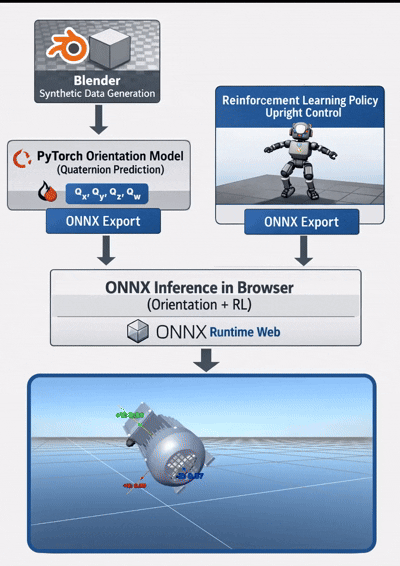

Object Rotation Prediction & Reinforced Learning for 3D Orientation Control
Python • Reinforcement Learning • WebGPU • Synthetic Data
Built an end-to-end ML system for predicting 3D object rotation and autonomous re-orientation using reinforcement learning.
- Migrated PyTorch models to client-side ONNX Runtime Web with WebGPU acceleration, reducing AWS egress costs from ~$2.4k/month to near-zero for 1,000 users
- Engineered synthetic data generation pipeline producing infinite labeled training datasets, achieving >95% rotation prediction accuracy
- Trained reinforcement learning agent for real-time 3D object re-orientation with sub-100ms inference latency
- Containerized training pipeline with Docker for scalable remote GPU deployment via SSH
ONNX Runtime Web
WebGPU
PyTorch
Docker + SSH
Cloudflare R2
